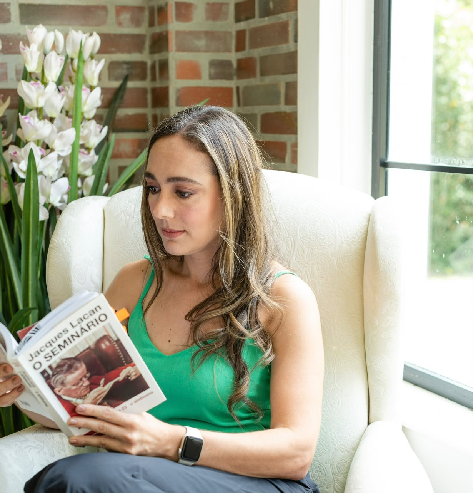

Sua singularidade
A orientação psicanalítica abre espaço para falar sobre sentimentos, relações, conflitos e experiências, respeitando o modo como cada pessoa vive sua própria história.
PSICOLOGIA ONLINE · ORIENTAÇÃO PSICANALÍTICA
Há coisas que precisam de tempo, de palavras e de um lugar para serem acolhidas.
Atendimento psicológico para adultos e adolescentes, em português, onde quer que você esteja.
Agendar pelo WhatsApp
SOBRE MIM
Sou Monica Campos de Oliveira, psicóloga inscrita no CRP 04/70334 - MG. Meu trabalho clínico é orientado pela psicanálise.
Atendo adultos e adolescentes em um espaço dedicado à fala e à escuta, considerando a singularidade de cada pessoa e das questões que a levam a buscar atendimento.
Os encontros acontecem online, em português, para brasileiros que vivem no Brasil ou no exterior.
Conheça meu currículo LattesO ATENDIMENTO
Você não precisa ter tudo organizado ou saber exatamente por onde começar para buscar atendimento.
A orientação psicanalítica abre espaço para falar sobre sentimentos, relações, conflitos e experiências, respeitando o modo como cada pessoa vive sua própria história.
As sessões são online, pelo Google Meet ou por videochamada no WhatsApp. Um ambiente reservado e uma boa conexão ajudam a cuidar desse momento.
O contato inicial acontece pelo WhatsApp. Podemos conversar sobre sua busca, os horários disponíveis e os detalhes do atendimento particular.
PARA QUEM VIVE FORA DO BRASIL
Viver em outro país pode trazer novas experiências e também questões sobre vínculos, mudanças e pertencimento. O atendimento em português oferece um espaço para falar sobre o que você vive, mesmo longe do Brasil.
Conversar sobre atendimento no exterior ↗DÚVIDAS FREQUENTES
Para adultos e adolescentes, independentemente de gênero ou da questão que motive a busca. O atendimento é individual, particular e online.
Por videochamada no Google Meet ou no WhatsApp, conforme combinado. Escolha um local reservado, onde você possa falar com privacidade, e tenha uma conexão estável.
Sim, Monica atende brasileiros residentes no exterior, em português. No primeiro contato, informe seu país e fuso horário para conversar sobre a possibilidade de atendimento e combinar os encontros.
O atendimento é particular. Para consultar valores e disponibilidade, entre em contato pelo WhatsApp. Os detalhes são conversados diretamente com Monica.
Você pode começar falando sobre o que fez você procurar atendimento ou sobre o que tem vivido. Não é preciso preparar um roteiro.
VAMOS CONVERSAR?
Entre em contato para saber mais sobre o atendimento
e encontrar um horário para você.